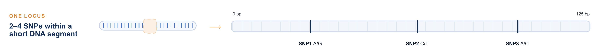

From Bi-allelic to Multi-allelic Markers
From two versions to many
We know that genomic selection reads genetic markers to predict traits. The most common marker is the SNP, a single position in the genome where only two versions are possible. At that spot, some individuals carry an A allele and the rest carry a G allele. Because there are only two allele versions, we call a SNP bi-allelic.
This is simple, but simple comes at a price. With only two versions, we can sort individuals into just two groups. That is a very rough way to tell them apart, and a single letter carries very little information on its own.
Remember that a marker only works because it sits close to a QTL, so the two are usually passed down together. But this pairing can break. When a parent passes DNA to its offspring, the chromosome is cut and rejoined in new places, a process called recombination. Each time this happens, a marker and its QTL can end up separated. Once they are apart, the marker no longer points to anything, and a single SNP is easy to separate in this way.
Reading words instead of letters
The idea here is simple. Instead of reading one position at a time, we read a few nearby positions together.
Consider a short piece of DNA, only about 125 letters long, that contains a few SNPs. Instead of treating each SNP on its own, we read all of them as one unit. This small combined marker is called a microhaplotype.

Now look at what happens to the number of versions. A single SNP has only two, but a short piece of DNA with several SNPs can be written in many different ways. Where a SNP gives us two options, a microhaplotype gives us many. Because it can take many values instead of two, we call it multi-allelic.
Think of it as the difference between a single letter and a short word. The letter “A” is just one letter, but a three-letter word can be one of thousands. The word holds far more information.
Why more versions help
More versions mean each marker tells us more.
Go back to the signpost analogy from the previous page. A bi-allelic marker is like a signpost that can only point left or right. A multi-allelic marker is like a signpost that can show many different messages, so it tells us where the QTL is much more precisely.
It also stays linked to its QTL more reliably. Because it reads more of the DNA around the QTL, the two are harder to separate when a chromosome is cut and rejoined. It is also better at tracking rare versions of a trait: a single letter often misses these, but a longer word can still catch them.
There is a bonus too. Because each microhaplotype carries so much information, we need fewer markers to get the same picture, or an even better one. Fewer markers, but each one doing more work.
What this means in practice
The best part of this approach is that it asks for almost nothing new.
Microhaplotypes are built from SNPs we already have. If a piece of DNA has already been sequenced, its SNPs are already there. We just choose to read them together instead of one by one, so the extra information costs nothing more. There is no new machine to buy and no new sample to collect.
It is worth being honest about the limits. Microhaplotypes are not a magic fix. Their advantage depends on how haplotypes are defined and which prediction method is used, and it is clearest for some traits and smaller for others. But the main lesson holds. Moving from two versions to many gives us markers that carry more information, stay linked to the traits we care about, and cost nothing extra to build.